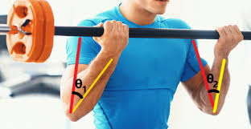
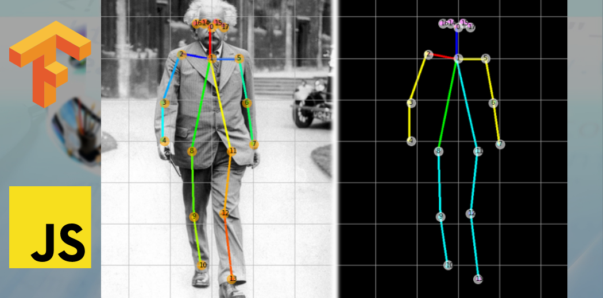

Problem statement:- To build a classification model to predict the type of thyroid based values given.
This Project completely based end to end pipeline from getting the data from client ,storing in database to predicting the values.
Possible usage - Model can be used by hospitals to smoothen there workflow . Depending on whether a person has thyroid or not, if YES then what kind it is and if it is hyperthyroid or patience require immediate assistance report will be directed to senior doctor and if is –ve or mild report(Hypothyroid) report will go to junior doctors (also will check whether model has correctly predicted)

Problem statement is to build a classification model to predict the type of thyroid based values given.
This Project completely based end to end pipeline from getting the data from client ,storing in database to predicting the values.
Possible usage - Model can be used by hospitals to smoothen there workflow . Depending on whether a person has thyroid or not, if YES then what kind it is and if it is hyperthyroid or patience require immediate assistance report will be directed to senior doctor and if is –ve or mild report(Hypothyroid) report will go to junior doctors (also will check whether model has correctly predicted)

Problem statement - We need to provide suggestion of similar movies based on movie selected by the user.
Data set contains information about 5000 movies collected from The Movie Database (TMDb).Here we are going to use Content Based Recommendation System.
Content-based recommenders treat recommendation as a user-specific classification problem and learn a classifier for the user's likes and dislikes based on an item's features.In this recommender system the content of the movie (overview, cast, crew, keyword, tagline etc) is used to find its similarity with other movies. Then the movies that are most likely to be similar are recommended.

Problem Statement :- We need to get a real-time pose along with the count of bicep curls done by the person.
This model can be used by a user in a gym to get a correct estimation of the amount of curl done by the user. Here we have used openCV along with the mediapipe pose estimation model to get the coordinates and these coordinates are drawn in real time using mediapipe.
Problem statement - This project involved the use of text vectorization techniques ie. TFIDF and use the ML pipeline to get the best model that classifies the iput message to be spam or not .

This project is based on javascript involving the use ml5.js to detect the posture.

Donec eget ex magna. Interdum et malesuada fames ac ante ipsum primis in faucibus. Pellentesque venenatis dolor imperdiet dolor mattis sagittis magna etiam.